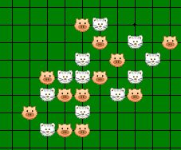

爱五子棋打谱软件存在的问题
#1 爱五子棋打谱软件存在的问题作者：4 发表时间：2009-6-26 4:05:47
目前已知问题：
1。不能计算VCF。
2。不能显示禁手。
欢迎大家继续提意见，建议。
#2 Re:爱五子棋打谱软件存在的问题作者：丝袜伯爵 发表时间：2009-6-26 8:26:06
 ，不能就算VCF？开发者根本也没有打算给他设置VCF 功能，那样的工作量是非常的大的。
，不能就算VCF？开发者根本也没有打算给他设置VCF 功能，那样的工作量是非常的大的。
不能显示禁手，当是也已改进的
#3 Re:爱五子棋打谱软件存在的问题作者：淡红的秋樱 发表时间：2009-6-26 8:37:09
建议做个超链接（以后用做目录)，比如说我要在棋谱库里面可以直接查询到某次比赛的棋谱。
#4 Re:爱五子棋打谱软件存在的问题作者：淡红的秋樱 发表时间：2009-6-26 8:39:41
或者类似俄罗斯慢棋renju-offline做成汉化版的。用以查询黑棋可以进攻的套路。#5 Re:爱五子棋打谱软件存在的问题作者：有志青年 发表时间：2009-6-26 8:43:47
兄弟姐妹们，提意见哟，四哥亲自汇总大家的建议了。
请大家注意，这是个打谱软件，不是一个综合软件！
#6 Re:爱五子棋打谱软件存在的问题作者：入山者 发表时间：2009-6-26 9:03:04
不知“合并文件”好不好用，若几个文件间有重复标注怎么办？#7 Re:爱五子棋打谱软件存在的问题作者：没定式随便下 发表时间：2009-6-26 10:06:31
当第一手不在天元的时候保存会出错。#8 Re:爱五子棋打谱软件存在的问题作者：失落刀 发表时间：2009-6-26 12:15:59
这个不知道是什么意思，且我设置为19后，点OK，棋盘没有变化和反应。
#9 Re:爱五子棋打谱软件存在的问题作者：失落刀 发表时间：2009-6-26 12:18:18
打开棋谱，就老出来这种空白文件，很麻烦，能不能取消？
#10 Re:爱五子棋打谱软件存在的问题作者：失落刀 发表时间：2009-6-26 12:24:39
假如我有图1的地毯谱，想通过平移后到图2的位置，来检查图1的变化到了图2的位置后有无盘端影响？软件能否对此进行智能检查？
#11 Re:爱五子棋打谱软件存在的问题作者：逆刃 发表时间：2009-6-26 13:21:20
平移后棋谱会出现问题。#12 Re:爱五子棋打谱软件存在的问题作者：失落刀 发表时间：2009-6-26 15:28:08
引用：
原文由 越狱行辕 发表于 2009-6-21 23:17:30 :我觉得 RENLIB那个 棋谱 标准化的功能 很好
至于 解VCF VCT啥的我觉得没啥用
#13 Re:爱五子棋打谱软件存在的问题作者：失落刀 发表时间：2009-6-26 15:31:23
500M的棋谱，512的内存，要求30秒可以打开，不卡。
#14 Re:Re:爱五子棋打谱软件存在的问题作者：wd1988 发表时间：2009-6-26 20:18:29
引用：关于这个问题，还是建议你去换个内存条。。。这好比要求潘长江一定要在和姚明的比赛中胜出一样，是自身硬件实在达不了标的问题。。。换衣服球鞋提高技术都是没用滴。。。
原文由 失落刀 发表于 2009-6-26 15:31:23 :
500M的棋谱，512的内存，要求30秒可以打开，不卡。
#15 Re:爱五子棋打谱软件存在的问题作者：4 发表时间：2009-6-26 21:01:31
有工具-》合并同型-》前三手标准谱型 的功能的啊，不过我没用过，
应该就是 RENLIB 棋谱 标准化的功能吧
#16 Re:爱五子棋打谱软件存在的问题作者：极地剑客 发表时间：2009-6-26 21:04:27
建议加上REBLIB的VCT和VCF~这样加上自身开大谱的优势~很多人会用这个了吧~#17 Re:爱五子棋打谱软件存在的问题作者：越狱行辕 发表时间：2009-6-26 21:28:55
。。。小四 给俺们点好看棋子吧#18 Re:爱五子棋打谱软件存在的问题作者：4 发表时间：2009-6-26 21:38:06
这样的？

#19 Re:爱五子棋打谱软件存在的问题作者：旅游者 发表时间：2009-6-26 21:43:43
期待仿古棋墩和云子 :)#20 Re:爱五子棋打谱软件存在的问题作者：越狱行辕 发表时间：2009-6-26 22:12:39
哈哈18 楼 棋盘也弄好看点吧 别太单调颜色了
毕竟这是要长期使用的东西。。虽然爱五子棋打谱软件现在功能很强了
但我还是多数用RENLIB 主要是好看 看着舒服
#21 Re:爱五子棋打谱软件存在的问题作者：失落刀 发表时间：2009-6-26 22:50:35
#22 Re:爱五子棋打谱软件存在的问题作者：失落刀 发表时间：2009-6-26 23:02:01
#23 Re:爱五子棋打谱软件存在的问题作者：失落刀 发表时间：2009-6-27 8:36:54
导出核心设置是什么意思？如何操作？
导入设置是什么意思？如何操作？
#24 Re:爱五子棋打谱软件存在的问题作者：失落刀 发表时间：2009-6-27 8:56:35
点“格数”进行设置无效。
点“演示”无效。
#25 Re:爱五子棋打谱软件存在的问题作者：白河愁 发表时间：2009-6-28 0:16:57
VC2在何方？这个才是正道啊！
#26 Re:爱五子棋打谱软件存在的问题作者：极地剑客 发表时间：2009-6-29 5:54:33
给你VC2，那都不用去买会员版了~不可能地撒~#27 Re:爱五子棋打谱软件存在的问题作者：失落刀 发表时间：2009-6-30 19:52:35
打谱软件强烈要求拥有各色皮肤！
#28 Re:爱五子棋打谱软件存在的问题作者：失落刀 发表时间：2009-6-30 20:51:19

要求拥有该图片的棋子上面可以输入字母（或文字）的功能，以及其他棋子上面没有任何信息的光棋子同时显示的功能。
#29 Re:爱五子棋打谱软件存在的问题作者：4 发表时间：2009-7-1 2:49:47
1。
========================
点“格数”进行设置无效。
点“演示”无效。
========================
这两个在制作中。
2。
界面设置好后，可以用设置-》导出界面设置，把设置保存到一个文档里。
可以用设置-》导入设置，导入保存的界面设置。
3
============================
“要求拥有该图片的棋子上面可以输入字母（或文字）的功能，以及其他棋子上面没有任何信息的光棋子同时显示的功能。”
============================
可以实现后几手棋加有标号，前面几手棋没有标号功能。具体操作：
设置-》盘面显示-》背景图片，出来一对话框，左下角：
着数后显示序号，
开始序号，
两项适当设置就可以了。
［ 越狱行辕 于 2009-7-1 6:44:20 时花20金币送鲜花一朵］
［ 失落刀 于 2009-7-1 7:10:08 时花20金币送鲜花一朵］
#30 Re:爱五子棋打谱软件存在的问题作者：极地剑客 发表时间：2009-7-1 5:54:48
小四不能不能加个“分析”功能~好象ORC那样~一个是正常看棋谱模式~按下分析~棋盘变色~变随意走动模式~#31 Re:爱五子棋打谱软件存在的问题作者：越狱行辕 发表时间：2009-7-1 6:44:53
谢谢小四的无私奉献 不给鲜花太不够意思了
#32 Re:爱五子棋打谱软件存在的问题作者：失落刀 发表时间：2009-7-3 22:24:06
要求：棋子上面可以显示字母或者汉字。
#33 Re:爱五子棋打谱软件存在的问题作者：lijeki 发表时间：2009-7-6 18:23:05
LS的图里面的字母能不能弄成棋子上面的数字一样的呀，那个标记背景色太难调了，只需要擦除标记位置上的一部分棋盘线就可以了#34 Re:爱五子棋打谱软件存在的问题作者：lijeki 发表时间：2009-7-9 0:25:03
再提个建议，用19路的棋盘打开15路的棋谱时能否保持原有的棋形#35 Re:爱五子棋打谱软件存在的问题作者：失落刀 发表时间：2009-7-9 14:10:12

用15道盘打开15道盘的棋谱图。

15道盘棋谱图调整格数为19后的图。
#36 Re:爱五子棋打谱软件存在的问题作者：lijeki 发表时间：2009-7-9 18:54:54
工具-》删除当前着法，无效#37 Re:爱五子棋打谱软件存在的问题作者：4 发表时间：2009-7-10 4:04:58
工具-》删除当前着法 没激活,下次更新时候补上,谢谢.
用19路的棋盘打开15路的棋谱时能否保持原有的棋形,这个在制作中.打算设计成打开棋谱,再摁个转换格数就可以了.
#38 Re:爱五子棋打谱软件存在的问题作者：星夜无云 发表时间：2009-7-10 15:31:51
窗口的位置和棋盘大小可以保存设置么，本人偏爱用大的棋盘，可是每次打开都要习惯性调整一下棋盘，要是能够保存就好多了#39 Re:爱五子棋打谱软件存在的问题作者：lijeki 发表时间：2009-7-10 22:50:47
前三手标准谱型在第一手非天元的情况下无效#40 Re:爱五子棋打谱软件存在的问题作者：4 发表时间：2009-7-14 6:29:56
第一手非天元，咋个标准化法？。
把第一手都挪到第一象限？若是的话，可暂且先手动处理，添加相应的第一象限的点，（是同型（彩色）点的话可用CTRL+鼠标左键添加）。然后走添加的点，恩工具-》合并同型-》当前分支。之后把其他象限的招法删掉就可以了。
#41 Re:爱五子棋打谱软件存在的问题作者：极地剑客 发表时间：2009-7-14 9:24:52
声音功能好象没有用~~~~~~~~~~~~~~~~#42 Re:爱五子棋打谱软件存在的问题作者：lijeki 发表时间：2009-7-14 9:44:19
LS的方法是可以，只不过棋谱上有几十个分支，手工操作有点麻烦；另外，某些分支经过翻转和旋转之后想保存当前的方向应该怎么弄；还有，黑子和白子的序号可以弄个隐藏选项么；最后还可以增加读取19路sgf文件的功能。现在renlib唯一的优点就是可以计算VCT，要是爱五子棋也加上这个，那么renlib就可以淘汰了。
#43 Re:爱五子棋打谱软件存在的问题作者：我爱棋 发表时间：2009-7-31 0:12:25
请问一下：
如果有不想要的分支如何删除?
#44 Re:Re:爱五子棋打谱软件存在的问题作者：黄药师 发表时间：2009-7-31 7:57:08
引用：
原文由 没定式随便下 发表于 2009-6-26 10:06:31 :
当第一手不在天元的时候保存会出错。
怪不得啊！
我打了几个题目保存，结果重新打开，简直驴唇不对马嘴！
#45 Re:爱五子棋打谱软件存在的问题作者：小玄 发表时间：2009-7-31 17:54:19
可以加大，论坛>输入Rena代码的容量吗？
#46 Re:爱五子棋打谱软件存在的问题作者：裁决殿雪月 发表时间：2009-8-1 22:54:10
不能出地毯……#47 Re:爱五子棋打谱软件存在的问题作者：uniwin 发表时间：2009-8-21 9:22:54
感受同45楼“可以加大，论坛>输入Rena代码的容量吗”，现在的只能输入30,000.00个字符，显然太少了好多的开局基本定式都输不完呢！！期待中。。。。。。
#48 Re:Re:爱五子棋打谱软件存在的问题作者：小丸.net 发表时间：2009-8-21 10:06:26
引用：能出地毯的200块钱一套,你要不要,要的话给你打个折.
原文由 裁决殿雪月 发表于 2009-8-1 22:54:10 :
不能出地毯……
#49 Re:Re:爱五子棋打谱软件存在的问题作者：小丸.net 发表时间：2009-8-21 11:49:44
引用：一般程序里的MEMO框的容量约为64Kb(64,000.00),四哥出来解释一下,还有34KB的数据是不是被你私吞了.
原文由 uniwin 发表于 2009-8-21 9:22:54 :感受同45楼“可以加大，论坛>输入Rena代码的容量吗”，现在的只能输入30,000.00个字符，显然太少了好多的开局基本定式都输不完呢！！期待中。。。。。。
#50 Re:Re:爱五子棋打谱软件存在的问题作者：刀魂 发表时间：2009-8-21 13:53:44
其实这种棋子蛮不错的嘛#51 Re:爱五子棋打谱软件存在的问题作者：团子亲卫队 发表时间：2009-8-21 17:27:29
希望像Renlib一样支持上下左右的键盘操作#52 Re:爱五子棋打谱软件存在的问题作者：uniwin 发表时间：2009-9-23 10:43:58
实话实说，爱五子棋打谱软件在好多功能上都超过了renlib，但爱之越深，要求越多，故仍然建议：
1、合并棋谱的注释可选择（向renlib那样），可选择保留原来的注释、保留新谱的注释、两个注释合二为一（renlib的设置是可以对每一个注释可以进行可视化地选择）；合并后注释的存储空间设置的大一些，原来的太小；
2、可粘贴的rena棋谱代码现在只能在3万个字符以内，有些开局基本定式棋谱无法粘贴，建议加大容量；
或者软件开发者能提供一个能把原来的rena代码（比如网页上的动态棋谱的rena代码）一分为N的方法或其他辅助功能，使得分次导入打谱软件成为可能。
3、棋盘旋转后，坐标显示是可选的，象renlib那样,可以选择坐标跟着变化或者依然保持原来的坐标（比如第N手棋原来坐标显示为A9,无论如何旋转，仍然显示为A9）；
4、象renlib3.7那样，打开棋谱时前二手棋自动可调整为标准的直指或斜指的标准样式（白2在黑1的上方或者右上方）；
5、美化棋盘与棋子；
6、加个“分析”功能，好象ORC那样，一个是正常看棋谱模式，按下分析后棋盘变色，变随意走动模式，分析完成以后可以选择是否将分析的棋谱加入正谱中或者放弃加入到正谱中。
四哥辛苦啦！
［ 有志青年 于 2009-9-23 12:33:42 时奖励此帖[金币加 20 威望加1］
#53 Re:爱五子棋打谱软件存在的问题作者：uniwin 发表时间：2009-9-23 16:12:03
想了下，再加两条：
7、把ShowPost.asp?ThreadID=1353帖子中的“爱五子棋打谱软件使用方法介绍”的内容分类整理后加入到软件的“帮助”主菜单中，叫做“使用手册”什么的，以方便使用者查看，现在的帮助菜单功能太弱了。
8、好东西也要有好包装才行，现在的软件界面非常朴素，除了棋盘棋子之外，再考虑一下整个界面如何更美观。并可考虑更多的自定义的功能，比如象foxmail或者奕典围棋打谱软件那样加侧面板，类似资源管理器的功能，在软件内部即可直观地、分级次地、可折叠地查看自己的棋谱库，随时切换。如图：
#54 Re:爱五子棋打谱软件存在的问题作者：巡检司 发表时间：2009-9-23 21:37:42
逼的4走投无路。
4要跳楼了。
#55 Re:爱五子棋打谱软件存在的问题作者：4 发表时间：2009-9-26 0:09:02
非常欢迎uniwin这样给软件提建议.我会及时在以后的升级中考虑把这些建议加进去.
［ 失落刀 于 2009-9-26 7:31:41 时花20金币送鲜花一朵］
#56 Re:Re:爱五子棋打谱软件存在的问题作者：uniwin 发表时间：2009-10-12 22:36:57
9、主程序窗口大小的调整
使用爱五子棋打谱软件右上角的最大化/向下还原按钮后，程序窗口只能还原到最大化窗口的95%左右，还是遮着其他的程序窗口，还需要手工调整大小。建议能像renlib那样一次性还原到最大化窗口的50%左右，或者可以还原到自定义比例的大小就好了。
10、关于图片导出功能
1）五子妙手2009sp2版本新增功能日本连珠社专业印刷棋谱功能（连珠番导谱功能）不错，建议参考；
2）建议参考：曾经有一款制作静态五子棋棋谱图片的软件，是从renbase软件中提取出来的棋谱制图工具，这个工具是除动态棋谱之外，最专业好用的（效果最漂亮的）bmp,jpg、wmf等格式的图片制作工具，并且制作出来的wmf文件格式文件个头超级小，一般只有不到10K最多十几K，并且该文件格式是矢量图形，放大后不失真、不变形。很多连珠网站使用它来制作静态的打谱图，大家所看到的ando的连珠教程中所用的图片就是用这个作出来的。这种图片另外一个好处是显示时去掉了棋谱图片中多余的部分（没有棋子的棋盘的边缘部分）、同时还能显示坐标，便于对照坐标打谱，效果如下：

上面不支持VMF格式的矢量位图图片，只好贴了一个BMP文件，所以图片有锯齿，具体可查看本附件VMF的效果-放大若干倍后不变形，无锯齿。 棋谱图片.rar
棋谱图片.rar
静态棋谱制作工具.rar使用方法：使用方法-双击界面打开图表工具箱
#57 Re:爱五子棋打谱软件存在的问题作者：uniwin 发表时间：2009-10-12 23:39:37
wmf
Wmf是Windows Metafile 的缩写，简称图元文件，它是微软公司定义的一种Windows平台下的图形文件格式。
wmf格式文件的特点如下：
1. wmf格式文件是Microsoft Windows操作平台所支持的一种图形格式文件，目前，其它操作系统尚不支持这种格式，如Unix、Linux等。
2. 与bmp格式不同，wmf格式文件是设备无关的，即它的输出特性不依赖于具体的输出设备。
3. 其图象完全由Win32 API所拥有的GDI函数来完成。
4. wmf格式文件所占的磁盘空间比其它任何格式的图形文件都要小得多。
5. 在建立图元文件时，不能实现即画即得，而是将GDI调用记录在图元文件中，之后，在GDI环境中重新执行，才可显示图象。
6. 显示图元文件的速度要比显示其它格式的图象文件慢，但是它形成图元文件的速度要远大于其它格式。